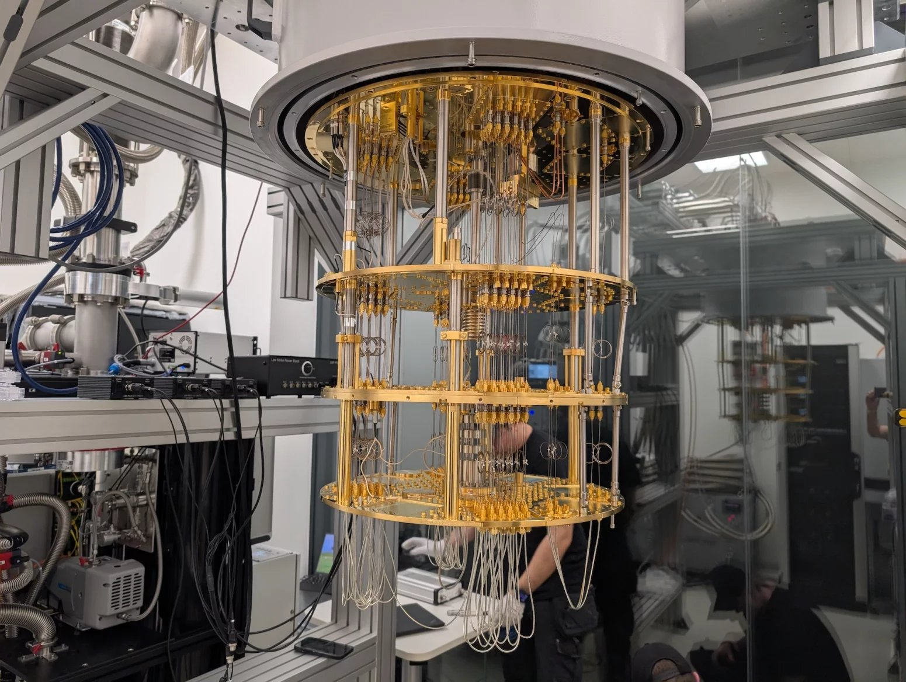

Co jsou kvantové počítače?
Český kvantový počítač
Kvantové počítače jsou revoluční typ výpočetní techniky, který využívá principy kvantové fyziky. Na rozdíl od klasických počítačů, které pracují s bity (0 nebo 1), kvantové počítače používají qubity, které mohou být současně v několika stavech díky superpozici.
Proč jsou důležité?
Díky své schopnosti provádět paralelní výpočty mají kvantové počítače potenciál řešit problémy, které jsou pro klasické počítače neřešitelné – například simulace molekul, optimalizace nebo prolomení šifrování.
Kam dál?
Pokračuj na další části: